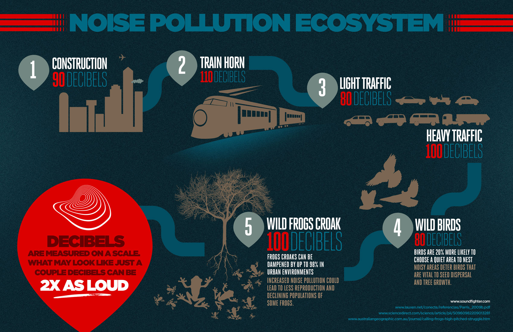
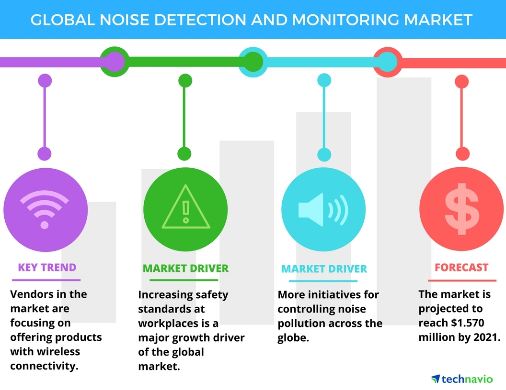

Situation on the Ground



Noise is an underestimated threat that can cause a number of short- and long-term health problems, such as for example sleep disturbance, cardiovascular effects, poorer work and school performance, hearing impairment, etc. Noise has emerged as a leading environmental nuisance in the WHO European Region, and the public complains about excessive noise more and more often.
The WHO guidelines for community noise recommend less than 30 A-weighted decibels (dB(A)) in bedrooms during the night for a sleep of good quality and less than 35 dB(A) in classrooms to allow good teaching and learning conditions. The WHO guidelines for night noise recommend less than 40 dB(A) of annual average (Lnight) outside of bedrooms to prevent adverse health effects from night noise.
According to a European Union (EU) publication: